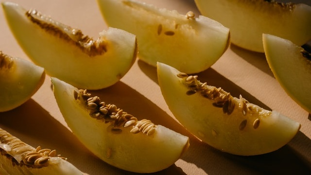

Benefícios

Melão
Informação Nutricional
Vitaminas C, A, B6, potássio, niacina, fibra dietética e ácido fólico.Dicas
Muito utilizado no café da manhã, o melão é um alimento funcional, por isso, cabe bem em todas as refeições. No almoço, por exemplo, pode acompanhar saladas. O suco de melão também é uma ótima alternativa de hidratação para quem deseja emagrecer. Assim como a maioria das frutas, as sementes de melão também podem ser aproveitadas em receitas do dia a dia.